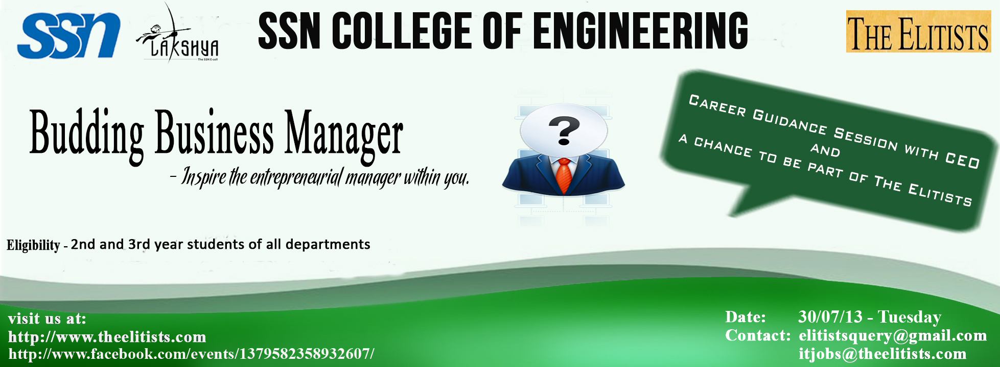
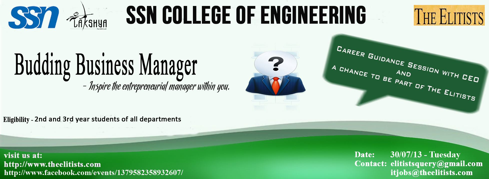

Current Scenario :- Best in class students & many of the brightest minds at several premier engineering colleges in India are increasingly attracted to various exciting management career opportunities that are emerging in a vibrant India. The single largest chunk of CAT/XAT aspirants, for instance, are Engineers (With/Without experience) Despite this, unfortunately, for various reasons, several bright students are still not aware of most of these options (Especially the options that exist beyond “Campus Recruitment”).
About The Elitists :- The Elitists, an IIM Alumni venture started over a decade ago & is an ultra exclusive, select client & executive talent focussed,relationships,metrics & results driven, pure play,super specialist,strategic business outcome/growth accelerator,providing world class organizations open to innovative approaches in executive talent acquisition & exceptional,consistent Top quartile performance track record demonstrated, proven Executive Talent open to exploring exceptional career opportunities, unique benefits. Operating at the highest end of the strategic talent acquisition consulting value chain, The Elitists partners with its clients through its offices in New York & Chennai To understand our business at a higher level of granularity, we invite you to review us at www.theelitists.com
The “Budding Business Manager” contest is an innovative & currently unique attempt from The Elitists to identify best in class Engineers , who in the opinion of The Elitists :- a) Demonstrate significant general managerial potential & b) With the right guidance & support, would be delighted to work hard towards strengthening & unleashing their potential to achieve greater heights, faster.
Eligibility Criteria :- Any First/Second/Third/Final Year student of these colleges from any department/specialization (For the On Campus event). Since our selection process is robust & rigorous, there is no specified minimum academic eligibility criteria to register for this event.The Elitists extends a special invitation to students :- - Who think they have the Values, Intellectual caliber & Leadership skills to become a highly respected business manager (IIM/XLRI/Top 50 Global B-School quality) of the future. & - Who are enthralled by world class Business Leaders & Businesses - Who are passionate about architecting their career in the fascinating World of Management.
Agenda :Session 1 : 30th July 2013, 2:00 PM • Mr. Venkatesh, founder and CEO of The Elitists will be addressing the audience. He will talk about career opportunities available in today’s world and the importance of being aware of each and every opportunity available. • Following this, all the interested students will be asked to fill up the “Budding Business Manager” Application Blank. This is will be the first stage of the “Budding Business Manager Contest”. • The Elitists will review all the submitted forms and the selected participants will go on to the forthcoming stages in the contest.
Session 2 : 1st August 2013, 9:00 AM
• Shortlisted applicants would be evaluated on the basis of the following rounds. :- i) Written Business Quiz for about 20 minutes. ii) Presentation round – Participants would be asked to :- • Present responses to specific queries & • Analyze an Industry or an Organization & be quizzed on the same. iii) Case Study round with a Group Interview Format. iv) Personal Interview round.
Winner Benefits :- - Certification of your latent/budding managerial skills by an expert from a super-specialist firm. - Potential opportunity to be engaged, groomed & mentored by senior IIM Alumni & seasoned business managers. - An opportunity to work with senior IIM Alumni & Intern in an exceptionally enriching, high profile management consulting role with a good stipend. - This knowledge & experience will distinctively differentiate the candidate’s profile if the candidate is aiming to join a Premier B-School ( IIM's/XLRI/Other Premier B-School in India/Internationally) in the future. - Best in class interns could get a Pre Placement Interview/Offer from The Elitists.